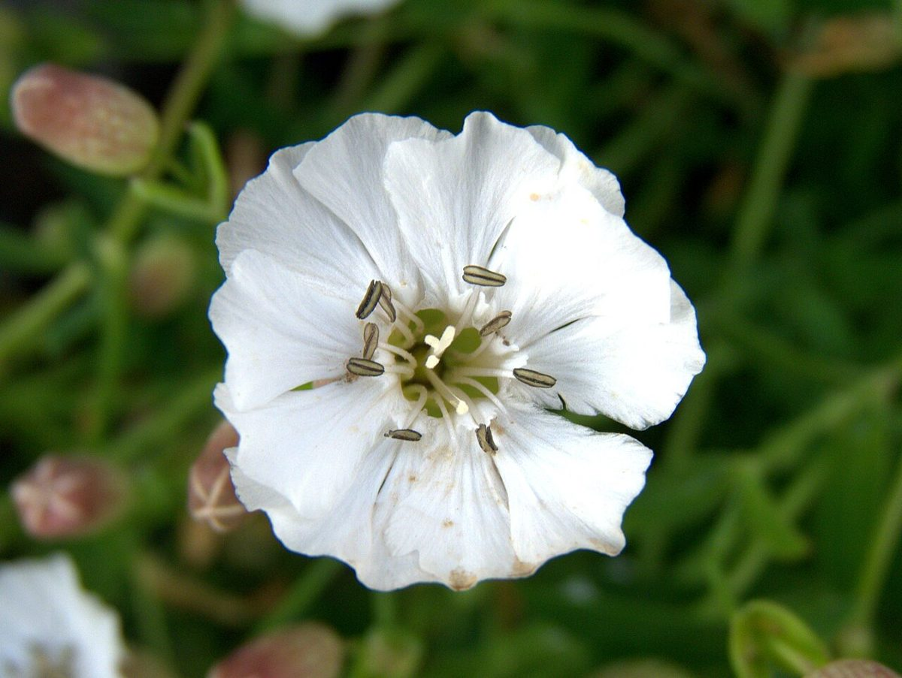
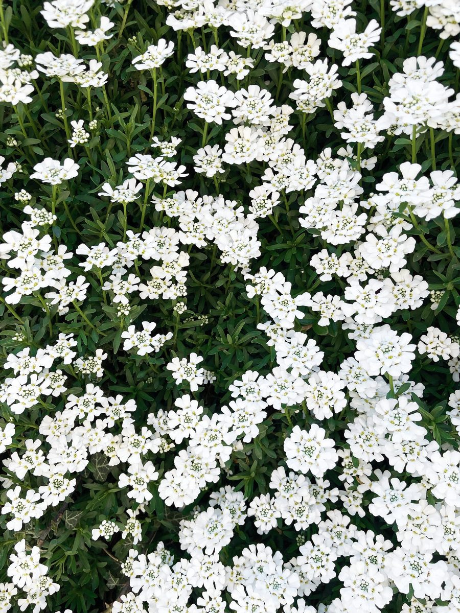
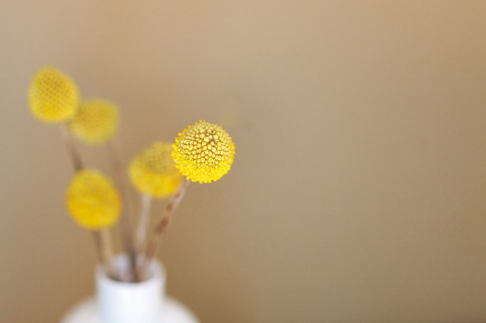
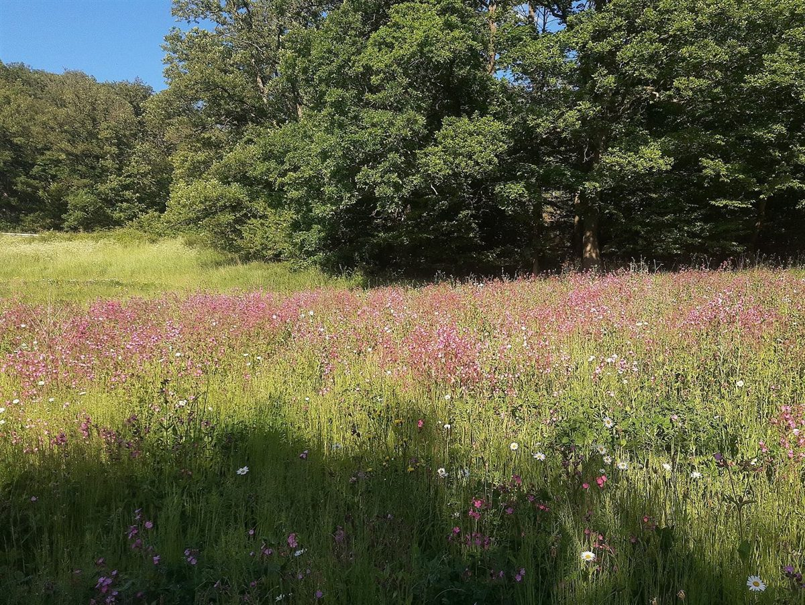

カフェ / 大分県中津市
カフェ
デイジー
大分県中津市新博多町にあるカフェ「Cafe Daisy(カフェデイジー)」のご案内ページです。営業時間やメニューなど、詳しいことは準備中。まずはInstagramをのぞいてみてください。

制作側の連想
「デイジー」から、花占いを思いついた。
店名の由来は分かりません。制作側は「デイジー」という響きから、花びらを一枚ずつ抜きながら気持ちを占う花占いを連想しました。そこでこのサイトは、5ページを5枚の花びらに見立てています。1枚め「まず見る」から5枚め「行く」まで。お店の理念や由来とは無関係の、制作側の連想です。
写真で一息(イメージ)
白い花と黄色い芯のあいだ。
写真は中津市やお店のものではありません。国外・撮影地不明のフリー素材です。




ご案内
お店のこと(確認できたものだけ)
| 所在地 | 〒871-0041 大分県中津市新博多町1716-1 |
|---|---|
| 電話 | なし |
| 営業時間 | 準備中 |
| 定休日 | 準備中 |
| ご予約 | 準備中 |
| 駐車場 | 準備中 |
| SNS | Instagram @cafe___daisy |